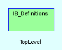

|  |
# Die Klasse Stock ist die MutterKlasse für Chart, Account und Ticker.
Modul IB_Definitions
Die Methoden dieses Moduls bündeln den Zugang zu den ib-spezifischen Einstellungen
Aus der yaml-Datei werden folgende Daten verarbeitet:
160 ib: 161 underlying: gbm <--- Hier Eintrag der TWS im Underlying-Modus eintragen 162 symbol: fgbm <--- Hier den konstanten Teil aus dem Symbol-Modus eintragen 163 exchange: dtb <--- Die Börse 164 contract: 305 <--- Das ist der default-Kontrakt. 165 backtestintervall: [ 1203, 304 , 604 , 904, 1204 ]
Methods
Public Instance methods
[ show source ]
# File stock.rb, line 34 def contract @stock["ib"]["contract"] end
[ show source ]
# File stock.rb, line 31 def contract= (thiscontract) @stock["ib"]["contract"]= checkContract(thiscontract) unless thiscontract==0 end
[ show source ]
# File stock.rb, line 19 def getDatabaseName sprintf("%s%04d",@stock["name"],@stock["ib"]["contract"]) end
Reflektiert den Yaml-eintrag unter ‘ib’ + ‘exchange’
[ show source ]
# File stock.rb, line 23 def ibExchange @stock["ib"]["exchange"].upcase end
[ show source ]
# File stock.rb, line 44 def ibSymbol contractTime=Time.mktime(@stock["ib"]["contract"].to_s[-2..-1].to_i,@stock["ib"]["contract"].to_s[0..-3].to_i) # mktime: year, month ibS= case ibExchange when 'DTB' , 'ECBOT' @stock["ib"]["symbol"]+contractTime.strftime(" %b %y") # generate symbol when 'GLOBEX', 'CME', 'CFE' , 'MONEP' contract={ 3 => "H", 6 => "M", 9 => "U" , 12 => "Z"} @stock["ib"]["symbol"]+contract[contractTime.month]+contractTime.strftime("%Y")[3..3] end ibS.upcase # return value end
[ show source ]
# File stock.rb, line 61 def ibTicker(contr=0) self.contract =contr [ibUnderlying, 'FUT' ,'', 0,'',ibExchange,"",ibSymbol] end
Reflektiert den Yaml-eintrag unter ‘ib’ + ‘underlying’
[ show source ]
# File stock.rb, line 27 def ibUnderlying @stock["ib"]["underlying"].upcase end